Да, вы не ослышались, именно стратегия! Потому что использовать хештеги это не добавлять в каждый пост кладбище тегов типа #instamood #love #like #beauty #girl #instalike…. (список можно продолжать бесконечно) или не #писатьтекстыпостовВОТТАК (что, не удалось прочитать с первого раза? Вот и пользователи так же!:-Р)
Начнём, пожалуй, с Instagram потому что…
…на самом деле, хештеги – это один из самых эффективных БЕСПЛАТНЫХ рекламных инструментов в Instagram. Конечно, если уметь ими пользоваться. Мы уже рассказывали о том, как работать со спросом в статье «Сам пришёл. Поисковая оптимизация в Instagram» и как искать себе клиентов в статье «Фантастические фоловеры и где они обитают» с помощью хештегов.
Теперь углубимся именно в тему хештегов и разберём общие советы по их использованию, рассмотрим цели, которые можно закрывать с помощью хештегов и составим-таки эффективную стратегию, которая может подойти для большинства типов бизнеса.
Итак, вот основные цели, которые вы можете закрыть, использованием хештегов:
- Привлечение спроса. То есть работать с теми пользователями, у которых уже есть потребность в вашем продукте/услуге и делать так чтобы они с наибольшей вероятностью попали именно к вам в профиль. Опять же, как это сделать, подробно описано в статье
-
Привлечение тёплой аудитории. Это можно сделать благодаря использованию
тематических и околотематических хештегов. Например, если вы продаёте БАДЫ, то в
постах, посвящённых продуктам: для похудения, укрепления костей и суставов,
витаминным комплексам, способствующим похудению или наращиванию мышечной
массы и т.п., вы можете упоминать тематические хештеги типа #правильноепитание
#фитнес #похудение, #диета и т.п. Только, при использовании тематических хештегов
обязательно следите за тем, чтобы в вашем посте была упомянута полезная информация
на заявленную вами в тегах тему. А ещё лучше, чтобы визуальная часть поста тоже
коррелировала с хештеговой массой.
 Правда, в данном случае девушка у себя в профиле объединила рубрики, связанные с едой в теге #рецепты_блондинки (хотя обратите внимание, в её профиле присутствуют не только рецепты), однако если провалиться по этому тегу, то можно обнаружить множество интересных подрубрик, например, #блонд_обед, #блонд_завтрак и #блонд_ужин
Правда, в данном случае девушка у себя в профиле объединила рубрики, связанные с едой в теге #рецепты_блондинки (хотя обратите внимание, в её профиле присутствуют не только рецепты), однако если провалиться по этому тегу, то можно обнаружить множество интересных подрубрик, например, #блонд_обед, #блонд_завтрак и #блонд_ужин -
Навигация по профилю.
-
Если у вас скорее тематический профиль с разнообразным полезным и/или
развлекательным контентом вы можете сделать навигацию по рубрикам. Важный
момент: следите за уникальностью тега. То есть не стоит называть рубрику
#правильноепитание потому что тогда при нажатии на тег пользователь увидит все
посты Инстаграма с этим тегом, а нужно отсортировать только ваши посты этой
рубрики. Сделать тег уникальным просто – добавьте в него брендовую часть,
например #solgar_правильное питание. При этом в данном случае простота
написания хештегов не так важна. Пользователи вряд ли будут вбивать их вручную
в общий поиск, скорее переходить к вам в профиль и там сортировать, нажимая на
нужный тег. В данном случае следует прописать список ваших рубрик в описании
профиля или хотя бы указывать тег на картинке.
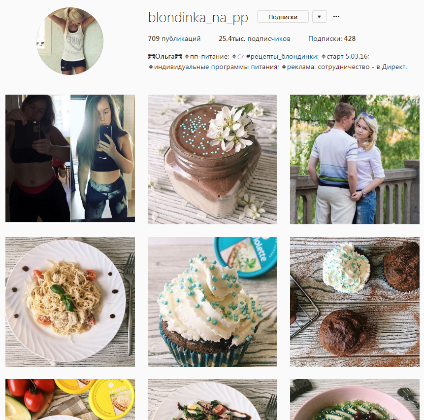
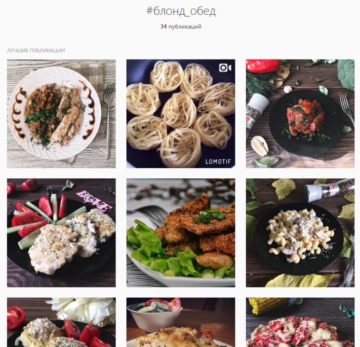
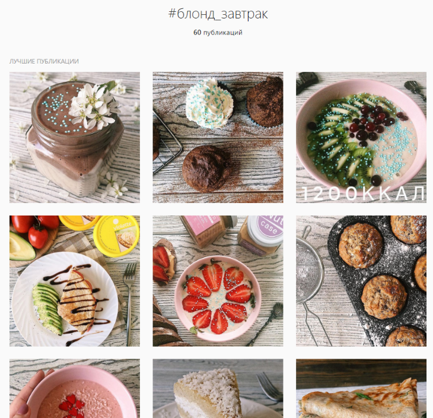
Правда, в данном случае девушка у себя в профиле объединила рубрики, связанные с едой в теге #рецепты_блондинки (хотя обратите внимание, в её профиле присутствуют не только рецепты), однако если провалиться по этому тегу, то можно обнаружить множество интересных подрубрик, например, #блонд_обед, #блонд_завтрак и #блонд_ужин.
-
Так же в качестве хештега можно использовать артикул товара. Тактика вам
поможет в том случае, если вы хотите чисто брендовый профиль, а товаров у вас не
очень много. Вы сможете показать товар со всех ракурсов, во всех цветовых
сочетаниях и с разными комбинациями, при этом не размещая все его фото в
одном посте + у пользователей будет мотивация именно подписаться на вас и
следить за обновлениями, а не просто добавить в закладки.
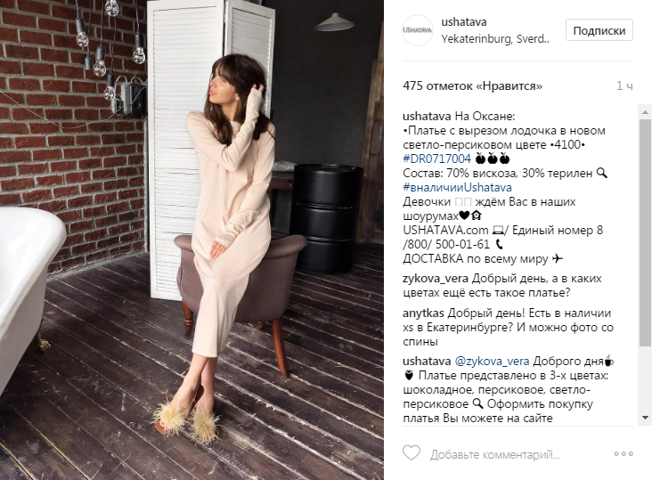
Обратите внимание, что данный профиль использует так же хештег #вналичииUshatava, регулярно убирая его в постах с товарами, которые исчезли из наличия.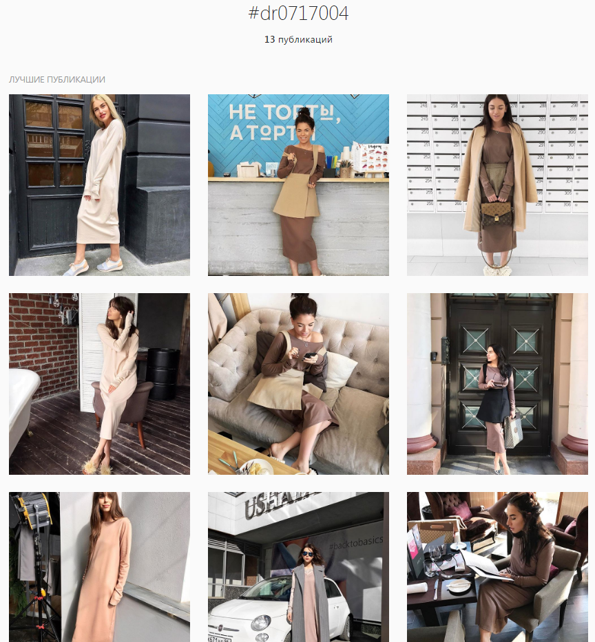
-
Если у вас скорее тематический профиль с разнообразным полезным и/или
развлекательным контентом вы можете сделать навигацию по рубрикам. Важный
момент: следите за уникальностью тега. То есть не стоит называть рубрику
#правильноепитание потому что тогда при нажатии на тег пользователь увидит все
посты Инстаграма с этим тегом, а нужно отсортировать только ваши посты этой
рубрики. Сделать тег уникальным просто – добавьте в него брендовую часть,
например #solgar_правильное питание. При этом в данном случае простота
написания хештегов не так важна. Пользователи вряд ли будут вбивать их вручную
в общий поиск, скорее переходить к вам в профиль и там сортировать, нажимая на
нужный тег. В данном случае следует прописать список ваших рубрик в описании
профиля или хотя бы указывать тег на картинке.
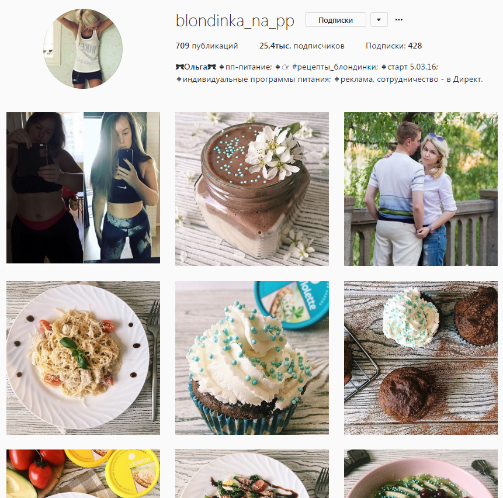
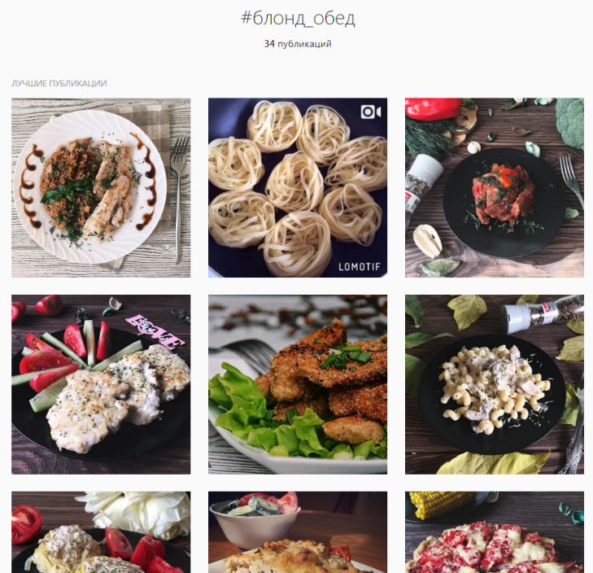
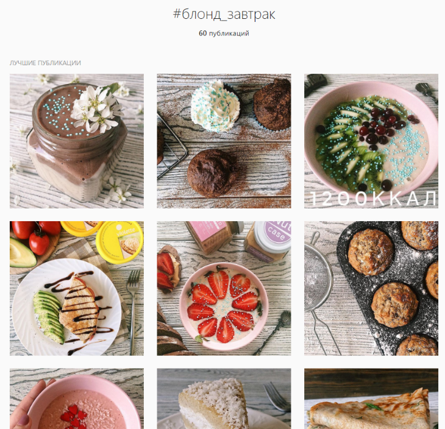
- Сбор UGC. Если важной частью вашей контентной стратегии является пользовательский контент, придумайте свой уникальный хештег и мотивируйте пользователей размещать свои посты именно с этим хештегом. В некоторых случаях понадобится дополнительная мотивация (например, ежемесячный конкурс на лучше фото с хештегом), а в некоторых пользователям достаточно будет просто сказать какой хештег использовать. Например, используйте хештег #goonmama (в этом теге использована формула название бренда + ключевое слово, но можно оставить и просто название бренда, если оно достаточно уникально. Например, #krispykreme) если хотите увидеть свои фото у нас в профиле 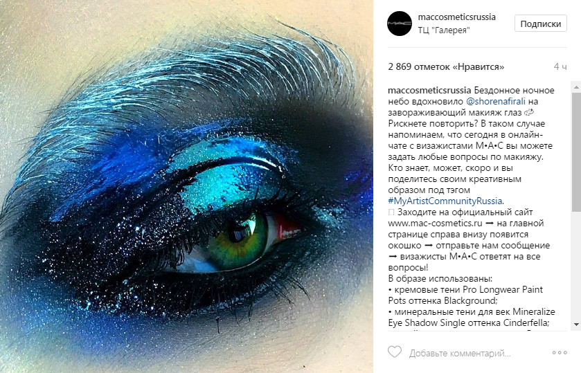 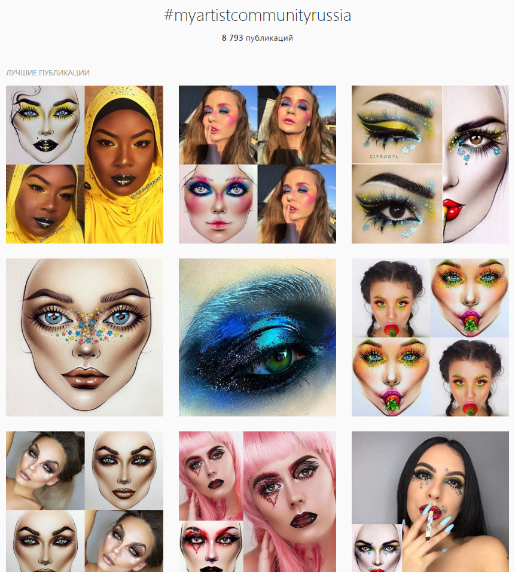
- Виральный эффект обычно нужен при запуске различных конкурсов, флешмобов, социальных проектов, марафонов и т.п. В данном случае опять же важна уникальность тега, при этом желательно чтобы он НЕ содержал название бренда и являлся мотивационным или самоидентификационным, то есть чтобы пользователь смог и захотел соотнести его с собой и в опубликованном им посте все понимали, что ставя данный хештег, автор имеет в виду себя и свою точку зрения. 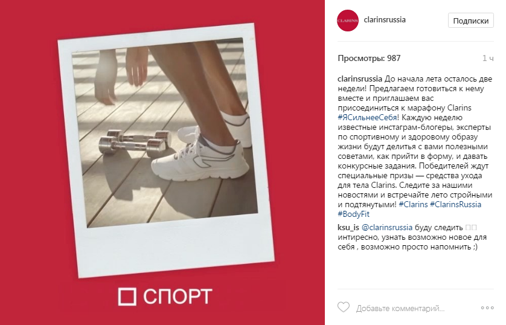
Итак, давайте попробуем сформировать универсальную эффективную стратегию тегирования. Представим, что мы делаем стратегию для бренда органической косметики:
- Предположим, что наш бренд достаточно известен и напоминать пользователям о том, что они могут размещать хештег с названием бренда не нужно. Только не забываем периодически репостить удачные фотки пользователей и в комментарии дублируем использованный пользователем ВАШ хештег, остальные можно стереть
- В продуктовой линейке бренда есть средства разной области применения: лицо, тело и волосы. И разного назначения: увлажнение, похудение, омолаживание и т.п. К области и к назначению добавляем название бренда, то есть получатся хештеги #бренд_лицо, #бренд_тело, #бренд_увлажнение, #бренд_похудение и т.п. В описании профиля пишем алгоритм навигации.
- К каждому продукту добавляем хештег с его уникальным артикулом. То есть, нажав на хештег артикула, пользователь должен увидеть ВСЕ посты, касающиеся этого продукта, как обычные продуктовые посты с описанием свойств, так же новости, касающиеся этого продукта (например, он попал в какой-то рейтинг), UGC в вашем профиле с этим продуктом (репосты с отзывами потребителей, репосты постов блогеров), посты с этим продуктом и другими продуктами этой линейки или продуктом, входящим в состав какой-нибудь подборки (например, что взять с собой в отпуск) и т.п.
- В первых комментариях к постам (не в самом теле поста!) указываем тематические хештеги, например: #натуральнаякосметика #organic #beautyblog и т.п.
Общие советы по использованию хештегов:
- Они должны быть читабельны
- Не разбивайте кладбище хештегов, в теле самого поста, используйте 4+- хештега, стараясь чтобы они были максимально полезны и нативны.
- Тематические хештеги публикуйте в первом комментарии к посту и тоже не перебарщивайте, пишите именно те ключевики, по которым вас могут искать пользователи
- Проверяйте частоту хештега, если размещаете его для привлечения аудитории. Нельзя использовать хештеги, у которых нет упоминаний или очень мало, нежелательно размещать слишком высокочастотные хештеги (ТОП в них может обновляться ежесекундно + невероятное количество всякого хлама, где ваш пост моментально потеряется).
- Не размещайте хештеги, не относящиеся к теме вашего поста и вашей отрасли. Это как раз те, про которые я говорила в самом начале поста: #instamood #love #like #beauty #girl #instalike. Под ними можно найти настоящую «свалку», в которой никто не захочет копаться чтобы что-то найти.
- Используйте в брендовом хештеге только 1 вариант написания, не нужно никаких русских транскрипций и т.п. Формируйте культуру потребления у своих клиентов, вам же потом легче будет.
- Если вы транснациональная компании, а профиль принадлежит российскому представительству, добавьте «Russia» в брендовый хештег
- Если вы региональная компания, можно добавлять хештег вашего города в 1й комментарий к посту. Хотя я бы не стала так делать, пробивают хештег города обычно туристы чтобы посмотреть куда сходить и на что посмотреть, вам нет смысла засорять им эфир каким-нибудь маникюром. Хотя если у вас кофейня (или другое место, которое может заинтересовать приезжего) или в вашем городе туристы – действительно редкость, то использование вполне оправдано.
«А что про другие социальные сети?» - спросите вы. «Есть же ещё ВКонтакте, Facebook, Одноклассники…»
Во-первых, в них хештеги служат скорее элементом фана, нежели чем реальным рекламным инструментом, там пользователи практически не ищут информацию таким образом.
Реальная практическая польза от использования хештегов в этих социалках – это:
- Механизм навигации по сообществу, о чём я подробно писала выше
- Поиск упоминаний для управления репутацией. Но там на первый план выходит скорее не поиск положительных отзывов для репостов, а отработка негатива…увы. Но это тоже крайне важно!
Пользуйтесь хештегами с умом и не засоряйте пользователям эфир, тогда для всех жизнь станет проще!